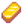

| Level 1
|
Level 2
|
Level 3
|
Level 4
|
Level 5
|
 Cherry Bomb Cherry Bomb
|
 Staircase Staircase
|
 Miner's Treat Miner's Treat
|
 Glowstone Ring Glowstone Ring
 Transmute (Fe) Transmute (Fe)
|
 Miner Miner
- +1 ore per vein.
|
 Geologist Geologist
- Chance for gems to appear in pairs.
- (50% chance per mining node. Also applies to geodes spawned from breaking rocks.)
|
|
|
| Level 6
|
Level 7
|
Level 8
|
Level 9
|
Level 10
|
 Bomb Bomb
|
 Transmute (Au)
|
 Mega Bomb Mega Bomb
|
 Crystalarium Crystalarium
|
 Blacksmith Blacksmith
- Metal bars worth 50% more.
- (Applies to Copper, Iron, Gold, Iridium, & Radioactive Bars)
|
 Excavator Excavator
- Chance to find geodes doubled.
- (Applies to all 4 types of geodes)
|
 Prospector Prospector
- Chance to find coal doubled.
|
 Gemologist Gemologist
- Gems worth 30% more.
- (applies to Minerals and Gems)
|